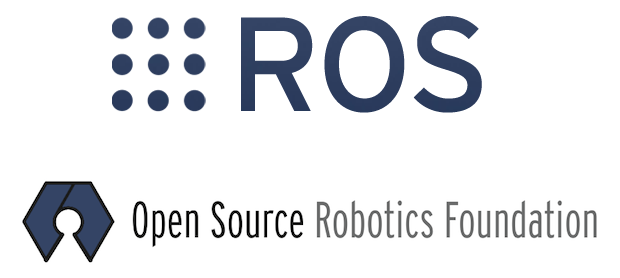

Autonomous Robots
ROS is a Robotics Framework. This year good friend Jourdon Tribue and I developed a simple robotics platform that we like to call Umlaut. Using the ROS navigation stack Umlaut uses a Kinect sensor to navigate between GPS coordinates. If you are looking for an introduction to robotics this is the place to start...
Deploying a free website!

Built with the python-based microframework Flask, this website is deployed behind a nginx load balancer on a free tier Amazon EC2 instance. Learn how to deploy your own webapp in 30 minutes!